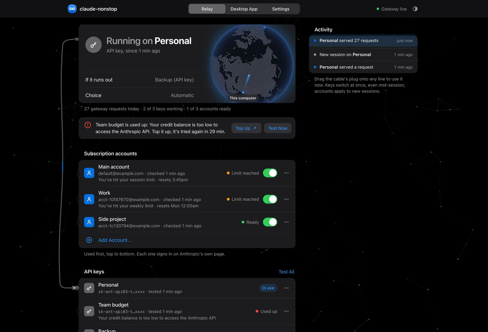

Keep Claude Code working through usage limits.
claude-nonstop is a free, open-source tool that keeps Claude Code, Codex and the Claude desktop app working when a subscription hits its session or weekly limit. It moves your work to your next account, then to your API keys, one by one, and you keep typing claude like always.
curl -fsSL https://raw.githubusercontent.com/umer-jahangier/claude-nonstop/main/install.sh | shirm https://raw.githubusercontent.com/umer-jahangier/claude-nonstop/main/install.ps1 | iexPaste it into a terminal (PowerShell on Windows). It brings its own Node.js, installs Claude Code if you don't have it, and opens a page to add your accounts and keys. Then open a new terminal and type claude.
MIT licensed · macOS, Windows and Linux · made by Muhammad Umer (Umer Jahangier)
One order, worked from the top
Your accounts and keys sit in one list. Every session starts on the first line with usage left. When it runs out, the same conversation carries on with the next line, and API keys take over only when every account is out.
- WorkClaude accountLimit reached
- Main accountClaude accountIn use
- ChatGPTChatGPT accountReady
- PersonalAnthropic API keyWorks
- BackupOpenAI API keyWorks
What you get
- Subscriptions firstSessions start on the first account with usage left. API keys are used only when every account is out.
- Never stalls at a limitIf an account runs out mid-task, the same conversation reopens on your next line and carries on by itself. With nothing left, it waits for the reset.
- Keys switch mid-requestA local gateway sends each request on your first working key. When a key runs out of credit, the same request goes out again on the next one.
- Every tool, every lineClaude Code, Codex, Cursor and the Claude desktop app run on Claude and ChatGPT accounts and on Anthropic and OpenAI keys, translated on the way.
- Your chats stayEvery account shares one Claude Code history, so
claude --resumeshows all of it. - Secrets stay on your computerKeys are encrypted at rest, with the encryption key in your system's credential store. No telemetry.

https://claude.nonstop, shown here with example accounts. Drag the cable to switch lines.How it works
Choosing a line
Before a session starts, claude-nonstop asks each account in your order whether it has usage left, with one tiny request run by Claude Code itself. The session starts on the first one that does. An account that hit its limit is skipped for a while before it's asked again.
When a limit hits mid-task
claude-nonstop runs the unmodified Claude Code with a few documented hooks. When a turn stops on a usage limit, it reopens the same conversation on your next line with claude --resume and tells Claude to continue where it left off. When an account has usage again, the session moves back to it.
API keys switch mid-request
Requests go through a local gateway on 127.0.0.1. If a key answers that its credit is too low, the gateway sends the same request again on the next key, so a running session never notices. A used-up key is skipped for 30 minutes, in case you top it up.
Codex, Cursor and the Claude desktop app
The gateway speaks Anthropic's Messages API and OpenAI's Responses and Chat Completions APIs. Setup points Codex and the Claude desktop app at it for you. A request that needs another service's format is translated on the way out and back, tool calls and streaming included.
Works with
| Tool | How it connects |
|---|---|
| Claude Code | In the terminal, VS Code and any editor that reads Claude Code's settings |
| Claude desktop app | Its third-party mode, set up by the installer |
| Codex | The codex command and the Codex app, set up by the installer, with no OpenAI sign-in needed |
| Cursor and others | Any tool that takes an OpenAI base address |
Each of them can run on Claude accounts, ChatGPT accounts, Anthropic API keys and OpenAI API keys, in the order you choose.
Guides
- Claude Code usage limit: how to keep working when you hit itWhat Claude Code's session and weekly limits are, what your options are when you hit one, and how to continue the same conversation on another account or an API key automatically.
- How to use multiple Claude accounts in Claude CodeRun Claude Code on several Claude subscriptions, keep one shared history, and switch to the next account automatically when one hits its limit.
- Use Codex with a Claude subscription or Claude API keyPoint OpenAI's Codex at claude-nonstop's local gateway so it runs on your Claude accounts, ChatGPT accounts, Anthropic keys and OpenAI keys, in the order you choose.
- Run the Claude desktop app on your API keysSet up the Claude desktop app's third-party mode with claude-nonstop, so it runs on your subscription accounts first and your Anthropic or OpenAI API keys when they're out.
- Automatic Anthropic and OpenAI API key failoverSwitch Claude Code, Codex and other tools to your next API key mid-request when one runs out of credit or hits its spend limit, without restarting the session.
- The claude-nonstop projects comparedSeveral open-source projects share the name claude-nonstop. What each one does, how they differ, and which one this site is about.
Frequently asked questions
What is claude-nonstop?
claude-nonstop is a free, open-source tool that keeps Claude Code working through plan limits. When a Claude subscription hits its session or weekly limit, it starts your next session on your next account, and when every account is out it moves to your API keys, one by one. The same local gateway also runs Codex, Cursor and the Claude desktop app, on Claude and ChatGPT accounts and on Anthropic and OpenAI API keys.
Who made claude-nonstop?
Muhammad Umer (Umer Jahangier, @umer-jahangier on GitHub), an AI and full-stack engineer in Lahore, Pakistan. The source is at github.com/umer-jahangier/claude-nonstop under the MIT license.
How do I keep using Claude Code after hitting the usage limit?
Add a second account or an API key to claude-nonstop. When the account you're on hits its session or weekly limit, claude-nonstop reopens the same conversation on the next line in your order with claude --resume and tells Claude to continue where it left off. With only one account, it waits for the reset and continues by itself.
Does claude-nonstop work with Codex and ChatGPT?
Yes. Setup points Codex at the local gateway, so Codex needs no OpenAI sign-in, and you can add ChatGPT accounts and OpenAI API keys next to your Claude ones. When a tool runs on another service's line, requests are translated between Anthropic's and OpenAI's formats, tool calls and streaming included.
Does it work with the Claude desktop app?
Yes. The installer sets up the desktop app's third-party mode with the settings Anthropic documents. In that mode each request walks your order: subscription accounts first, then API keys. Your claude.ai chats can be brought over with the app's own import.
Is claude-nonstop free?
Yes. It's free and open source under the MIT license, with no account, server or telemetry of its own. It runs on your own subscriptions and API keys.
Is it safe? Where are my keys stored?
Everything runs on your computer. API keys are encrypted at rest with AES-256-GCM, and the encryption key is held by the macOS Keychain, Windows DPAPI or the Linux Secret Service. Keys are only sent to the service they belong to, and the gateway accepts connections from your computer only.
Is using several accounts allowed?
claude-nonstop runs the unmodified Claude Code and uses only documented features. Every account and key you add must be your own: sharing a subscription between people is against Anthropic's and OpenAI's terms. Running one company's subscription from the other company's tool (Codex on a Claude account, say) isn't covered by their terms, so either could stop accepting it.
Do I need API keys?
No. With only subscription accounts, claude-nonstop moves from one to the next. API keys are the fallback for when every account is out.
Which operating systems does it support?
macOS, Windows and Linux. The installer brings its own Node.js, so there's nothing to install first.
Is this the claude-nonstop package on npm?
No. Several unrelated projects use the name, including the plain claude-nonstop package on npm, by another author. This one is umer-jahangier/claude-nonstop on GitHub, and on npm it's @umer-jahangier/claude-nonstop. The one-line command on this page is the recommended install: it updates itself from the repository's releases.
How do I update or uninstall it?
It updates itself from GitHub releases within the hour, and claude-nonstop update installs the newest version right away. claude-nonstop uninstall removes it and undoes every change setup made; add --purge to delete your saved keys and accounts too.